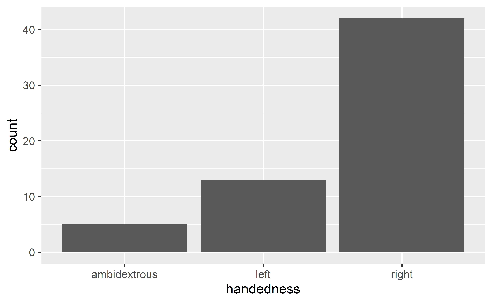
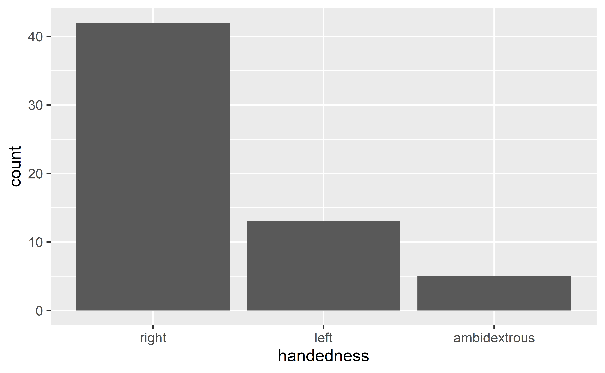
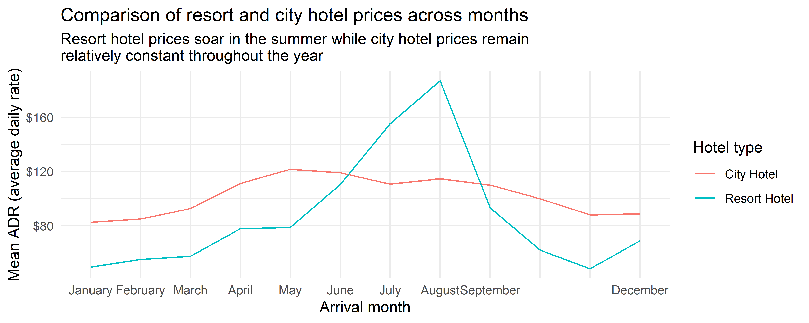

Data classes
Data Science in a Box
layout: true
class: middle
Data classes
Data classes
We talked about types so far, next we’ll introduce the concept of classes
- Vectors are like Lego building blocks
| - We stick them together to build more complicated constructs, e.g. representations of data |
|---|
| - The class attribute relates to the S3 class of an object which determines its behaviour - You don’t need to worry about what S3 classes really mean, but you can read more about it here if you’re curious |
- Examples: factors, dates, and data frames
Factors
R uses factors to handle categorical variables, variables that have a fixed and known set of possible values
x <- factor(c("BS", "MS", "PhD", "MS"))
x[1] BS MS PhD MS
Levels: BS MS PhD–
.pull-left[] .pull-right[]
More on factors
We can think of factors like character (level labels) and an integer (level numbers) glued together
glimpse(x) Factor w/ 3 levels "BS","MS","PhD": 1 2 3 2as.integer(x)[1] 1 2 3 2Dates
y <- as.Date("2020-01-01")
y[1] "2020-01-01"typeof(y)[1] "double"class(y)[1] "Date"More on dates
We can think of dates like an integer (the number of days since the origin, 1 Jan 1970) and an integer (the origin) glued together
as.integer(y)[1] 18262as.integer(y) / 365 # roughly 50 yrs[1] 50.03288Data frames
We can think of data frames like like vectors of equal length glued together
df <- data.frame(x = 1:2, y = 3:4)
df x y
1 1 3
2 2 4.pull-left[] .pull-right[]
Lists
Lists are a generic vector container vectors of any type can go in them
l <- list(
x = 1:4,
y = c("hi", "hello", "jello"),
z = c(TRUE, FALSE)
)
l$x
[1] 1 2 3 4
$y
[1] "hi" "hello" "jello"
$z
[1] TRUE FALSELists and data frames
- A data frame is a special list containing vectors of equal length
- When we use the
pull()function, we extract a vector from the data frame
df x y
1 1 3
2 2 4df %>%
pull(y)[1] 3 4class: middle
Working with factors
Read data in as character strings
glimpse(cat_lovers)Rows: 60
Columns: 3
$ name <chr> "Bernice Warren", "Woodrow Stone", "Will~
$ number_of_cats <chr> "0", "0", "1", "3", "3", "2", "1", "1", ~
$ handedness <chr> "left", "left", "left", "left", "left", ~But coerce when plotting
ggplot(cat_lovers, mapping = aes(x = handedness)) +
geom_bar()
Use forcats to manipulate factors
cat_lovers %>%
mutate(handedness = fct_infreq(handedness)) %>% #<<
ggplot(mapping = aes(x = handedness)) +
geom_bar()
Come for the functionality
.pull-left[ … stay for the logo] .pull-right[]
.pull-left-wide[ - Factors are useful when you have true categorical data and you want to override the ordering of character vectors to improve display - They are also useful in modeling scenarios - The forcats package provides a suite of useful tools that solve common problems with factors]
.small[ .your-turn[ ### .hand[Your turn!] ]]

class: middle
Working with dates
Make a date
.pull-left[] .pull-right[ - lubridate is the tidyverse-friendly package that makes dealing with dates a little easier - It’s not one of the core tidyverse packages, hence it’s installed with install.packages("tidyverse) but it’s not loaded with it, and needs to be explicitly loaded with library(lubridate)]
class: middle
.hand[.light-blue[ we’re just going to scratch the surface of working with dates in R here…]]
.question[ Calculate and visualise the number of bookings on any given arrival date.]
hotels %>%
select(starts_with("arrival_"))# A tibble: 119,390 x 4
arrival_date_year arrival_date_month arrival_date_wee~1 arriv~2
<dbl> <chr> <dbl> <dbl>
1 2015 July 27 1
2 2015 July 27 1
3 2015 July 27 1
4 2015 July 27 1
5 2015 July 27 1
6 2015 July 27 1
# ... with 119,384 more rows, and abbreviated variable names
# 1: arrival_date_week_number, 2: arrival_date_day_of_monthStep 1. Construct dates
.midi[]
Step 2. Count bookings per date
.midi[]
Step 3. Visualise bookings per date
.midi[]
.hand[zooming in a bit…]
.question[ Why does the plot start with August when we know our data start in July? And why does 10 August come after 1 August?]
.midi[]
Step 1. REVISED Construct dates “as dates”
.midi[]
Step 2. Count bookings per date
.midi[]
Step 3a. Visualise bookings per date
.midi[]
Step 3b. Visualise using a smooth curve
.midi[]